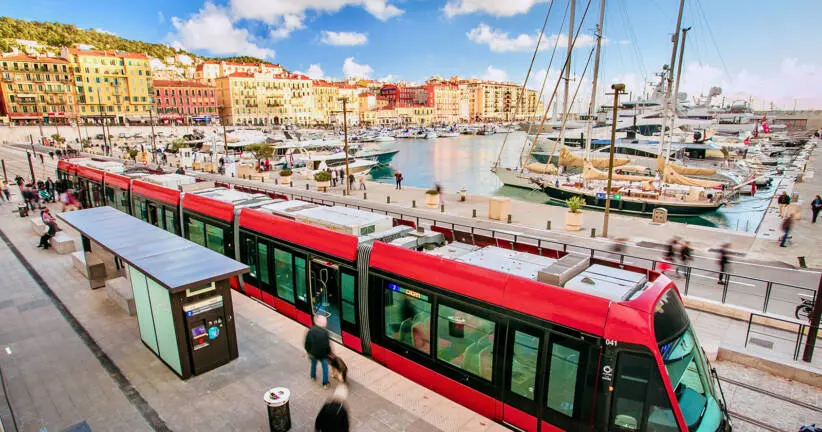
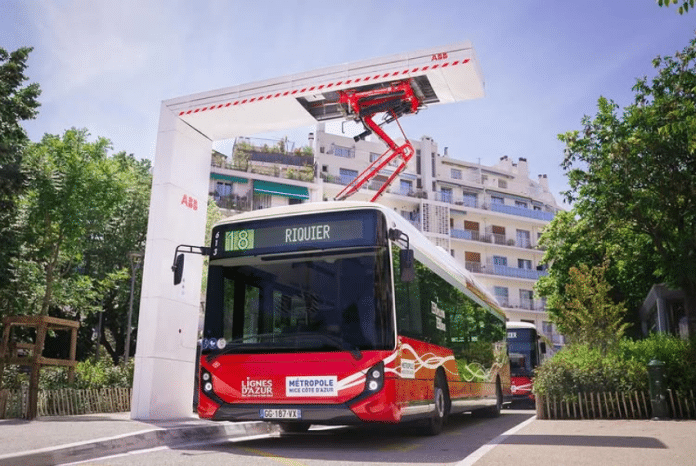

Présentation globale
- Nom : Régie Ligne d’Azur (RLA)
- Statut : Établissement Public Industriel et Commercial (EPIC)
- Création : 2013 (immatriculation 02/07/2013)
- Adresse : 2 boulevard Henri Sappia, 06100 Nice
- Effectif : entre 1 000 et 1 999 salariés (2022)
- Code APE : 49.31Z (Transports urbains)
- Type : Régie publique appartenant à la Métropole Nice Côte d’Azur
- Mission : exploitation du réseau “Lignes d’Azur” (tram + bus)
Historique rapide
En 2013, la RLA reprend l’exploitation du réseau de transport pour la Métropole. En 2019, une grande refonte du réseau de bus est mise en place, ainsi que l’extension du tramway. La RLA n’a pas d’actionnaires : elle appartient entièrement à la collectivité. Son objectif n’est pas le profit mais un service public fiable, propre et accessible.
Particularités
- Pas de capital social
- Pas d’actionnaires
- Objectif : service public, pas le bénéfice
- Déficits compensés par la Métropole
Importance économique dans la Métropole
La Régie Ligne d’Azur est l’acteur n°1 de la mobilité à Nice. Chaque année elle permet de :
- Transporter plus de 100 millions de voyageurs
- Réduire fortement l’usage de la voiture
- Soutenir l’économie locale (salariés, prestataires, maintenance)
Contribution économique directe
- 1 000 à 1 999 salariés : l’un des plus gros employeurs publics locaux
- Masse salariale estimée : 40 à 60 M€ / an
- Investissements annuels : 30 à 80 M€ / an
Contribution indirecte
- Dynamisation du commerce grâce au tramway
- Valorisation immobilière autour des stations
- Attractivité touristique (tram + bus très utilisés)
Tarification actuelle
- Ticket unitaire : 1,70 € (coût réel ≈ 3,50 € → différence payée par la Métropole)
-
Abonnement -26 ans :
- Mensuel : 22,50 €
- Annuel : 180 €
-
Abonnement 26–64 ans :
- Mensuel : 45 €
- Annuel : 360 €
- Gratuité : enfants de moins de 11 ans (à partir de 2025)
Structure économique
Revenus
- Ventes de titres : 30–45 M€ / an
- Subvention de la Métropole : 50–80 M€ / an
- Versement Mobilité (taxe entreprises) : 20–30 M€ / an
Total de financement : 100 à 150 M€ / an
Dépenses
| Poste | Montant estimé | % du total |
|---|---|---|
| Salaires | 50 M€ | 60–70% |
| Entretien bus + tram | 15–20 M€ | 15% |
| Énergie | 8–12 M€ | 8% |
| Investissements | 20–60 M€ | 10–40% |
| Technologie + billettique | 2–3 M€ | 2% |
Taux d'utilisation de transports non polluants
Tramway
- 100% électrique
- ≈ 40% des trajets RLA
- Aucun rejet de CO₂

Bus propres (GNV / électrique / hybrides)
- Environ 25% du parc
- Objectif 100% bus propres en 2030

Taux global de mobilité non polluante : 45% à 55% des trajets.
Impact économique du non-polluant
- Le tram consomme 0,12 €/km (3× moins qu’un bus diesel à 0,35 €/km)
- Moins de coûts santé liés à la pollution
- Un bus électrique remplace 600 voitures
- Entretien bus électrique : -30%
- Carburant : -70%
Projections économiques
Si la RLA passe à 100% électrique :
- Économie de 8 à 12 M€/an en carburant
- −20% en maintenance
- Réduction CO₂ : 20 000 tonnes/an
Améliorations déjà mises en place
1) Modernisation du tramway (100% électrique)
- Extension du réseau en 2019 (Lignes T2 et T3)
- Tramway entièrement électrique → 0 émission locale
- 40% des trajets RLA effectués en tram, mode 100% propre
2) Introduction progressive de bus propres
- Environ 25% du parc bus est aujourd’hui GNV, hybride ou électrique
- Réduction des émissions de CO₂ et du bruit
- Objectif : 100% de bus propres en 2030
3) Système de billettique numérique
- Applications smartphone et QR code → moins de papier
- Recharge en ligne pour limiter les déplacements en agence
- Réduction des coûts de distribution matérielle
4) Développement de Parkings Relais (ParcAzur)
- Parkings connectés directement au tram
- Réduction du nombre de voitures entrant dans Nice
- Moins de pollution + fluidité du trafic
5) Renforcement de la priorité aux modes doux
- Création de pistes cyclables autour des lignes T1, T2, T3
- Stationnements vélo sécurisés aux stations principales
- Réduction progressive des voies voiture dans l'hyper-centre
6) Politique tarifaire incitative
- Tarifs jeunes très bas (22,50 €/mois / 180 €/an)
- Gratuité pour les moins de 11 ans (dès 2025)
- Objectif : favoriser le transport propre et réduire l’usage de la voiture
Améliorations non polluantes proposées
1) 100% de bus électriques
- Prix : 450 000 – 700 000 € par bus
- Flotte ≈ 300 bus → remplacement total = 135–200 M€
- Avantages : 0 CO₂, −80% bruit, entretien −30%
2) Nouvelle ligne de tram
- Coût : 20–30 M€ / km
- Exemple 4 km → 80 à 120 M€
- Transport 100% propre + désengorgement du trafic
3) 10 km de pistes cyclables sécurisées
- Coût : 200 000 € / km → total 2 M€
- Encourage la mobilité douce
4) Agrandissement des Parkings Relais (ParcAzur)
- Coût d’un parking 300 places : 6–10 M€
- Moins de voitures en centre-ville
5) Pass jeunes à 15 €/mois
- Subvention Métropole : 7,50 € / usager
- Favorise l’usage du transport commun
Impact environnemental
- Bus diesel : 1000 g de CO₂/km + particules fines + NOx
- Bus électriques : 0 émission locale + très faible bruit
- Tram : 0 émission, capacité 300 personnes (remplace 200 voitures)
La transition écologique menée par la RLA réduit fortement la pollution atmosphérique, le bruit et les embouteillages. En tant qu’EPIC public financé par la Métropole, la RLA privilégie la qualité du service plutôt que le profit.